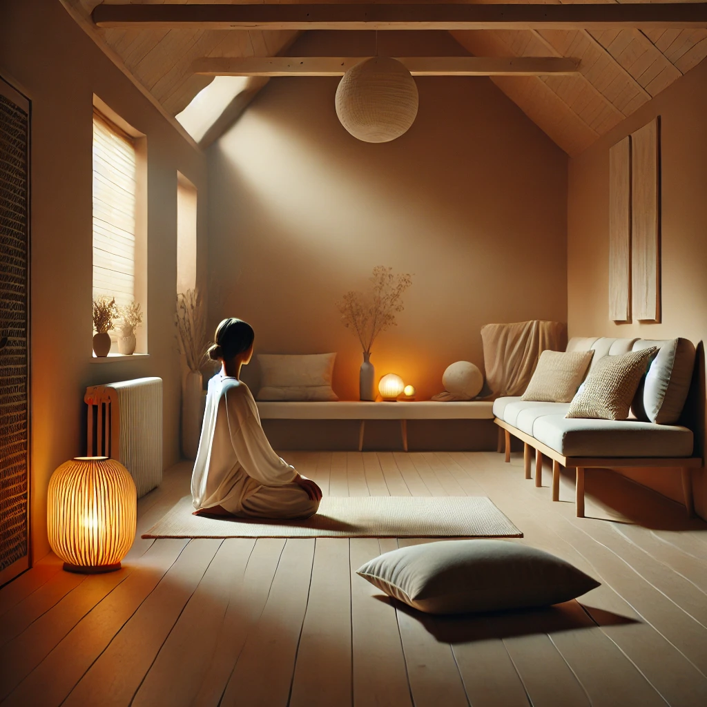
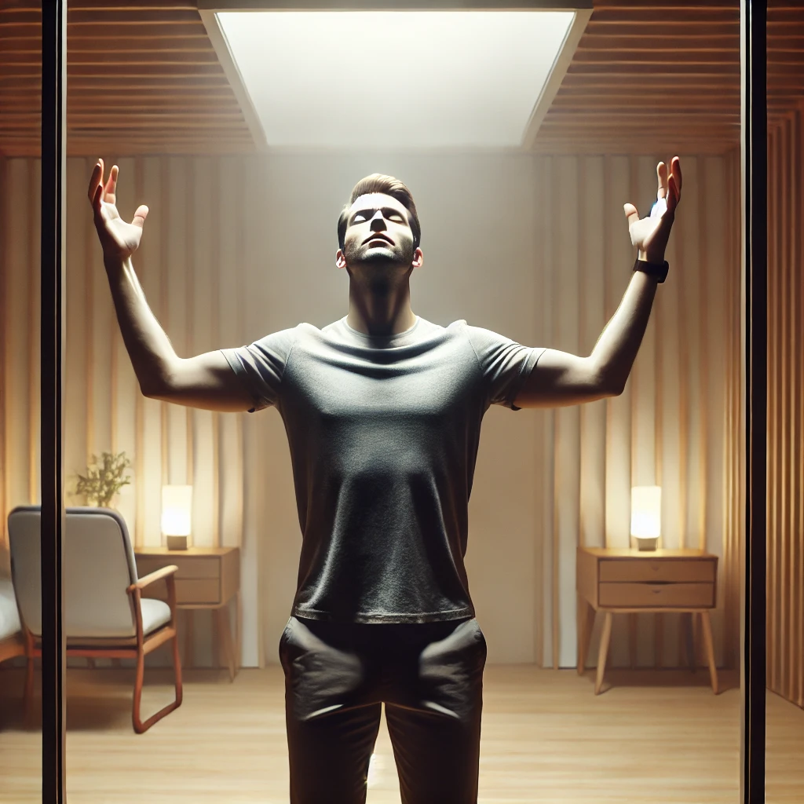
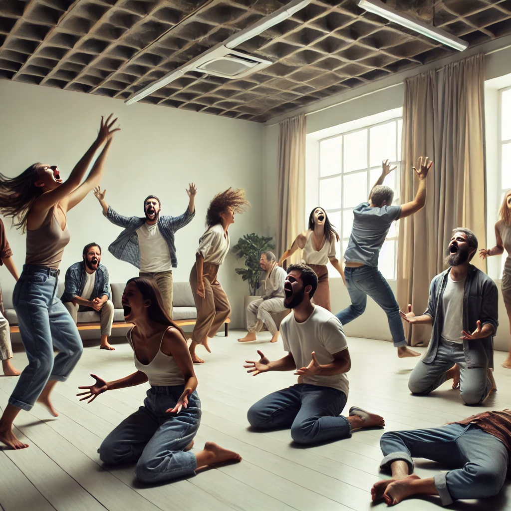
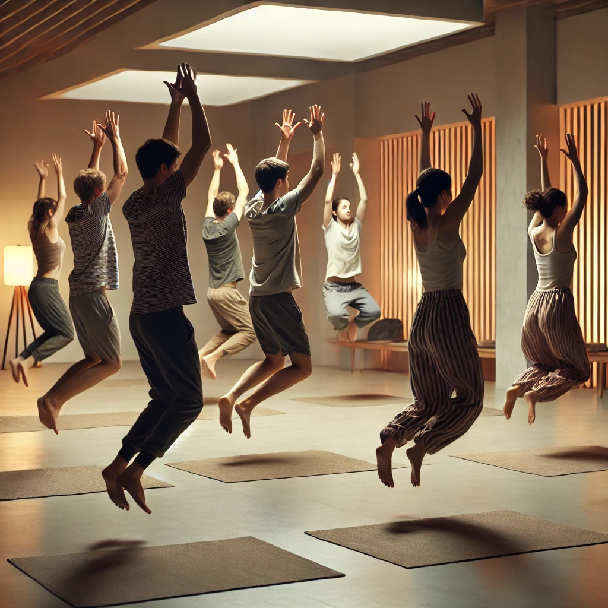
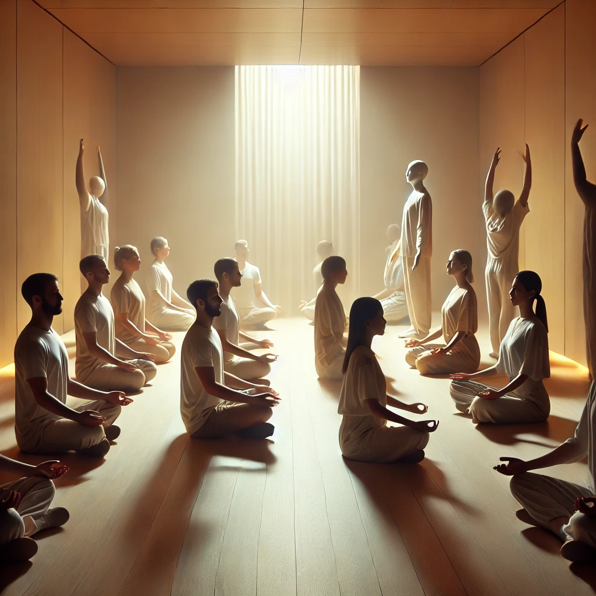
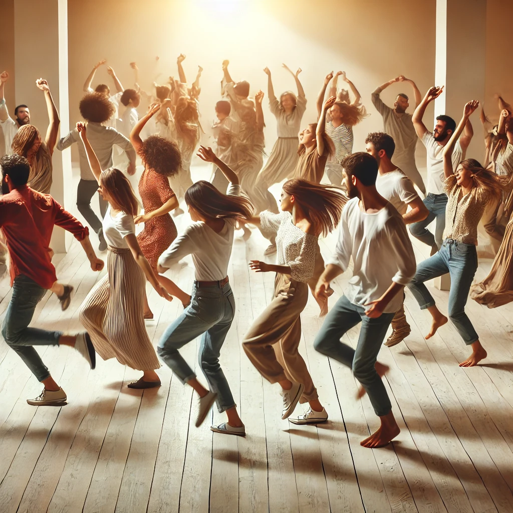

Dynamic meditation is a unique practice developed by Osho that combines physical movement, breathwork, and emotional release. This technique is designed to help participants break free from mental blocks, release stress, and connect to their inner energy. It involves active, cathartic processes that end in stillness and awareness.
To practice this meditation: Download the audio and listen to it while following the steps below.
Find a quiet and private space. Wear comfortable clothing that allows freedom of movement. Ensure there are no distractions for the duration of the session.
Stand with your arms raised, eyes closed, and breathe deeply and rapidly through your nose. Focus on chaotic breathing, allowing your body to energize itself.
Allow yourself to fully express any emotions you have. Shout, scream, laugh, cry, or move. This phase is about total release and letting go of emotional tension.
With eyes closed, jump up and down on the spot while chanting the mantra "Hoo! Hoo! Hoo!" Let the sound resonate within your body as you land on the soles of your feet.
Suddenly freeze in your position mid-jump. Keep your body completely still. Observe the energy flowing within you while remaining in total stillness.
After the freeze, start dancing with freedom and joy. Let your movements be an expression of your energy, celebrating life without any restrictions or inhibitions.
